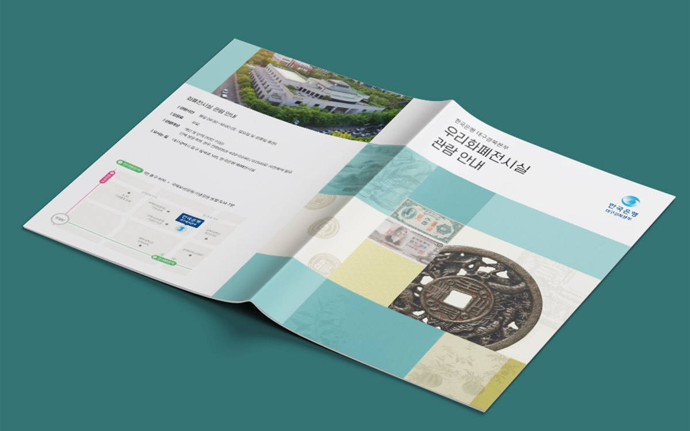

핵심 요약
① 입찰 제안서의 목차는 우리가 하고 싶은 말이 아니라 평가표의 배점 항목 순서로 짜야 평가위원이 점수를 매기기 쉽습니다.
② 수행 체계, 일정, 산출물 목록처럼 구조가 있는 내용은 글 대신 도식 한 장으로 바꾸면 읽는 시간이 크게 줄어듭니다.
③ 제출본은 공고문의 규격(판형·제본·부수)을 먼저 확인하고, 발표용 자료는 한 슬라이드에 한 메시지만 남깁니다.
안녕하세요, 퍼스트디자인 대전지사입니다. 대전에는 정부출연연구기관, 정부대전청사 산하 기관, 대덕특구 기업이 발주하거나 응모하는 입찰과 과제 공모가 유난히 많습니다. 제안서를 여러 건 봐 온 입장에서 말씀드리면, 떨어지는 제안서는 내용이 부족해서가 아니라 평가위원이 점수를 매길 자리를 못 찾아서 떨어지는 경우가 더 많습니다. 오늘은 평가위원이 읽기 쉬운 제안서 구성을 실제 편집 순서로 정리해 드리겠습니다.
제안서 목차는 왜 평가표 순서로 짜야 할까?
평가위원은 제안서를 처음부터 끝까지 읽지 않습니다. 평가표를 옆에 두고 배점 항목별로 근거를 찾아 점수를 적습니다. 목차가 회사 소개 → 기술 소개 → 실적 순서로 되어 있으면 평가위원은 '수행 체계 적정성'이라는 항목의 근거를 찾기 위해 30페이지를 뒤져야 합니다. 그 시간이 길어질수록 점수는 보수적으로 매겨집니다.
저희는 공고문의 평가표를 받으면 배점 항목을 그대로 목차의 대제목으로 옮깁니다. 항목 이름을 바꾸지 않는 것이 중요합니다. 평가표에 '사업 이해도'라고 적혀 있으면 제안서에도 '1. 사업 이해도'로 씁니다. 그리고 각 장의 첫 페이지에 그 항목에서 우리가 내세우는 핵심 근거 세 가지를 요약 박스로 넣어, 페이지를 넘기지 않아도 점수를 매길 수 있게 합니다.

어떤 페이지를 글 대신 도식으로 바꿔야 할까?
제안서에서 글로 쓰면 길어지고 도식으로 바꾸면 한 장에 끝나는 내용이 정해져 있습니다. 아래 표는 저희가 제안서를 받으면 가장 먼저 도식으로 바꾸는 항목입니다.
| 항목 | 도식 형태 | 효과 |
| 수행 체계 · 조직 | 조직도 + 역할 박스 | 책임자와 인력 투입이 한눈에 보임 |
| 추진 일정 | 월별 간트 차트 | 단계별 산출물 시점이 명확해짐 |
| 기술 · 방법론 | 프로세스 흐름도 | 비전공 평가위원도 순서를 이해함 |
| 유사 실적 | 실적 카드(발주처 · 기간 · 규모) | 요구 조건 충족 여부를 바로 대조함 |
도식은 화려할 필요가 없습니다. 오히려 색을 두 가지로 제한하고 화살표 방향을 통일하는 것이 읽는 속도를 높입니다. 제안서 전체에서 같은 모양의 박스는 같은 의미로만 쓰는 규칙도 중요합니다.
제출본과 발표 자료는 무엇이 달라야 할까?
같은 제안서라도 인쇄해서 제출하는 본과 발표장에서 띄우는 자료는 구성이 다릅니다. 제출본은 평가위원이 책상에서 넘겨 읽기 때문에 한 페이지에 근거 자료를 충분히 담고, 본문 글자 크기는 10~11포인트를 유지합니다. 발표 자료는 반대로 한 슬라이드에 한 메시지만 남기고 글자 크기를 24포인트 이상으로 키웁니다.
두 버전을 따로 만들면 수정이 생길 때마다 두 곳을 고쳐야 합니다. 저희는 같은 마스터 파일에서 제출용과 발표용을 뽑아내는 방식으로 작업해 마감 직전 수정도 양쪽에 동시에 반영합니다. 공고문에 제본 방식과 부수가 정해져 있으면 자체 인쇄소에서 그 규격대로 인쇄해 제출 전날 전달합니다.
제출 기한이 촉박할 때는 어떻게 진행할까?
입찰 공고에서 제출까지 2주밖에 없는 경우가 흔합니다. 이때는 원고가 다 나올 때까지 기다리지 않습니다. 첫날 목차와 페이지 플랜을 확정하고, 확정된 장부터 순서대로 디자인에 들어가 원고 작성과 디자인이 나란히 진행되게 합니다. 마지막 3일은 수정과 검수, 인쇄에 남겨 둡니다.
이 방식이 가능하려면 담당자와 저희 기획자가 매일 짧게 진행 상황을 맞춰야 합니다. 대전 시내 기관은 필요하면 직접 방문해 원고를 함께 정리하고, 보안 자료는 비밀유지계약을 먼저 체결한 뒤 전담팀만 접근하도록 관리합니다.
자주 묻는 질문
Q. 대덕특구 연구소기업인데 정부 과제 제안서를 처음 써 봅니다. 목차부터 도와주시나요?
A. 네. 공고문과 평가표를 보내주시면 배점 항목 기준으로 목차와 페이지별 핵심 메시지를 함께 정리합니다. 기술 내용은 담당자가 쓰시고 저희는 구조와 표현, 도식을 맡는 방식입니다.
Q. 제안서 30페이지 디자인에 얼마나 걸리나요?
A. 원고가 확정된 상태라면 5~7영업일이 걸립니다. 원고 작성과 병행하면 전체 기간은 2주 정도를 잡습니다.
Q. 제출본 인쇄와 제본도 해 주나요?
A. 네. 공고문 규격에 맞춰 컬러 인쇄 후 무선·링·스프링 제본으로 제출 부수만큼 준비합니다. 정부대전청사·유성구 기관은 직접 전달도 가능합니다.
Q. 기술 자료가 대외비인데 안전하게 관리되나요?
A. 요청하시면 비밀유지계약을 먼저 체결하고, 프로젝트 파일은 전담팀만 접근하도록 관리합니다. 납품 후 파일은 요청에 따라 반환하거나 폐기합니다.
퍼스트디자인 대전지사
대덕연구단지와 정부대전청사, 세종·청주·공주 충청권의 연구기관·바이오 기업·공공기관·제조기업 홍보물을 전담합니다. 기획·디자인·번역·촬영·인쇄를 한 팀에서 처리하고, 자체 인쇄소에서 소량 디지털 인쇄부터 대량 옵셋 인쇄까지 직접 진행합니다. 초안을 먼저 확인받고 진행하는 방식으로 12년간 3,200건 이상을 납품했습니다.
- 12년+편집 디자인 경력
- 3,200+납품 프로젝트
- 98%재의뢰 · 소개
- 400+정부지원사업 수행
입찰·과제 제안서와 발표 자료 디자인이 필요하시면 공고문과 함께 문의해 주세요. 평가표 기준으로 목차부터 잡아 드립니다. 상담은 1600-9487(평일 09:00~18:00) 또는 work@firstmkt.co.kr로 문의해 주세요. 대전·세종·충청권은 직접 방문 미팅도 가능합니다.